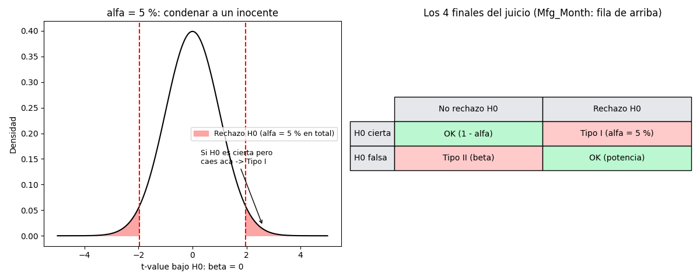

Bloque D · Regresión lineal, selección y regularización · Lección 0057 · mié 2 sep
Errores tipo I y II: condenar inocentes o soltar culpables
Win de hoy: la tabla 2×2 del juicio — α = 5 % es la chance de error tipo I
(falsa alarma, verificada por simulación: 0,050) y no rechazar a
Mfg_Month (p = 0,087) arriesga un error tipo II (culpable que se escapa).
1 · Los 4 finales del juicio
El juicio de la lección 0042 (H0 «β = 0» vs H1 «β ≠ 0») tiene 4 finales, porque la realidad y tu decisión se cruzan. Dos salen bien y dos son errores con nombre propio:
| No rechazo H0 | Rechazo H0 | |
|---|---|---|
| H0 cierta (β = 0) | OK (prob. 1 − α) | Tipo I: falsa alarma (prob. α) |
| H0 falsa (β ≠ 0) | Tipo II: se escapa (prob. β) | OK: detección (prob. potencia = 1 − β) |

En criollo: tipo I = condenar a un inocente (decir «mueve el precio» cuando no mueve nada); tipo II = soltar a un culpable (declarar «sin pruebas» un efecto que sí existe).
Regenerar la figura (mismo resultado versionado en assets/img/toyota/):
python scripts/make_figures.py --only errores-tipo-1-22 · α = 5 % lo elegís vos (y se verifica)
α es la falsa alarma que aceptás: la convención del pizarrón (0042) es 5 %. No es ley física: si condenar a un inocente sale carísimo, usá 1 %; si soltar culpables es peor, 10 %. Pero hay tradeoff: bajar α achica las colas rojas y sube β — es el mismo dilema del umbral de la 0034 (umbral 0,3/0,5/0,7 → FN 53/107/167). Y el 5 % no es verso: simulando 100.000 t bajo H0, el 5,0 % cae en rechazo:
import numpy as np
from scipy import stats as st
t = st.t.rvs(1426, size=100000, random_state=42) # mundo donde H0 es cierta
print(((abs(t) > 1.96).mean())) # 0.05 → 5 de cada 100 juicios fallan igual3 · Toyota: KM tranquilo, Mfg_Month en riesgo
KM (t = −30,9, p ≈ 0): rechazamos H0 holgados. El riesgo tipo I existe en teoría (5 %), pero con 30 desvíos de evidencia dormimos tranquilos. Mfg_Month (t = −1,71, p = 0,087): no rechazamos — y acá vive el riesgo tipo II: por eso 0042 insiste en que «no significativo» ≠ «efecto cero». Tal vez el mes sí mueve −25 €/mes de verdad (su estimado) y 1436 autos no alcanzan para probarlo. Moraleja de negocio: antes de borrarla (ver 0019), preguntate cuál error te sale más caro.
4 · Quiz (auto-chequeo inmediato)
5 · Fuente primaria y cierre
Para profundizar (1 fuente): Diez, Barr & Çetinkaya-Rundel, OpenIntro Statistics — cap. 4–5 (tests de hipótesis, errores tipo I y II). Más contexto en RESOURCES.
¿Algo no quedó claro? Preguntame al agente: cuándo conviene α = 1 % en vez de 5 %, cómo subir la potencia sin juntar más datos, o qué error preferís en una alarma de fraude.
Orden Bloque D: con los dos errores ya medís el riesgo de cada veredicto. Siguiente en el bloque: 0003 · Regresión lineal Price ~ KM: la recta simple, R², residuos y K-Fold.